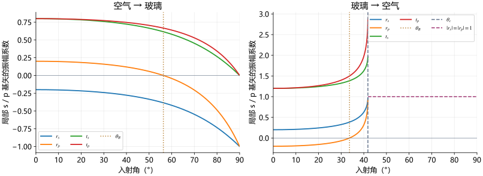

21 读振幅与相位曲线：零点、半波损失和适用边界
按光疏/光密两种方向读原曲线，用明确基底区分相位与向量方向，并核对课件概括中的条件。
窗玻璃换一个角度，反光为什么会变
玻璃反光强弱随角度变化，某些偏振甚至能在一个角度消失。本课先读电场振幅系数，图中的 尚不能直接当作能量比例。P14备注明确要求观察系数的数值和符号变化；该观察任务也收录在题目区，下面给出解释，可直接阅读。
尚不能直接当作能量比例。P14备注明确要求观察系数的数值和符号变化；该观察任务也收录在题目区，下面给出解释，可直接阅读。

 ，纵轴为振幅系数；左图
，纵轴为振幅系数；左图 ，右图
，右图 。虚线
。虚线 是p反射零点，
是p反射零点， 是传播折射支的临界边缘。
是传播折射支的临界边缘。左图：空气到玻璃
从已推导的余弦公式计算，正入射 。随着增加，
。随着增加， 始终负，模值逐渐趋近1；
始终负，模值逐渐趋近1； 先正，在Brewster角
先正，在Brewster角 为零，再负，掠入射极限趋
为零，再负，掠入射极限趋 。
。 在传播折射支均正，掠入射趋零。
在传播折射支均正，掠入射趋零。
“p消失”表示入射光的p分量所对应的反射振幅为零；若入射本来就是纯p光，反射光整体为零。若原入射同时有s、p，则剩下s反射。课件“只有s波”隐含入射含有s分量。
右图：玻璃到空气
正入射 。在
。在 处
处 。继续增加到
。继续增加到 ，
， ；
； 。临界边缘
。临界边缘 ，并不趋零。
，并不趋零。
透射电场的幅值可以大于入射场，但这不等于透射能量更多。折射束在临界角沿界面传播，法向能流趋零；下一课会把 因子补上。
因子补上。
P14在临界角后把反射曲线画成1，应读作 的模；系数本身为复数，不是实常量1。透射曲线不再画出的是实角传播折射支，不能推出介质2的场消失；P15“透射光消失”必须限定为没有向介质2深处传播的透射束，倏逝场后面仍要讨论。
的模；系数本身为复数，不是实常量1。透射曲线不再画出的是实角传播折射支，不能推出介质2的场消失；P15“透射光消失”必须限定为没有向介质2深处传播的透射束，倏逝场后面仍要讨论。
把P15–17的相位规则放到一张带条件的表
在无吸收、实折射率、未全反射的普通界面， 为实数。正系数的基底振幅相位为0，负系数为
为实数。正系数的基底振幅相位为0，负系数为 （与
（与 等价）。以下沿P9的s、p基底比较：
等价）。以下沿P9的s、p基底比较：
| 入射方向与角度范围 | |
|
相位含义 |
|---|---|---|---|
光疏到光密， |
负 | 正 | s基底振幅反相，p基底振幅同相 |
光疏到光密， |
负 | 负 | 两个基底振幅均反相 |
| 光密到光疏， |
正 | 负 | s基底振幅同相，p基底振幅反相 |
光密到光疏， |
正 | 正 | 两个基底振幅均同相 |
光密到光疏， |
复数、模1 | 复数、模1 | 相位随角度连续变化，不能只分正负 |
在处，p反射场不存在，它的相位无定义；图上的“相位跳变”表示从零点两边趋近的极限，不能给零振幅本身指定一个相位。正入射时s、p基底不同所致的符号差异，已在上一课还原为同一固定坐标响应。
传播折射支的 ，所以相对于所选基底和同一界面参考点，折射不额外引入0/π跳变。在介质中传播仍会累积相位：波仍会积累
，所以相对于所选基底和同一界面参考点，折射不额外引入0/π跳变。在介质中传播仍会累积相位：波仍会积累 ，不同折射方向的电场矢量也不会与原矢量处处平行。
，不同折射方向的电场矢量也不会与原矢量处处平行。

课件P3采用 。在后续全反射公式中
。在后续全反射公式中 ，
， 表示正的相位延迟量，而系数的复辐角为
表示正的相位延迟量，而系数的复辐角为 。P17画的是正延迟支；不要把图中正的
。P17画的是正延迟支；不要把图中正的 直接替换成相同符号的
直接替换成相同符号的 。全反射部分会把公式逐步推出来。
。全反射部分会把公式逐步推出来。
P18三张矢量图不是三个时间阶段

 、等于
、等于 、大于三种不同入射条件。矩形是垂直各束传播方向的电场振动平面，箭头是分量及合电场方向。
、大于三种不同入射条件。矩形是垂直各束传播方向的电场振动平面，箭头是分量及合电场方向。左图：反射s取相反基底方向，p按图规定正方向，合电场由两分量相加。中图：p反射为零，反射场只有s；不是图上所有电场都消失。右图：p反射也改变基底振幅符号，合电场的取向随之改变。透射电场始终垂直折射方向，因此传播方向变了，它的几何取向也会随之变。这是参数比较图，不能当成一束光随时间依次经历三种状态的动画。
怎样理解“半波损失”
反射相位增加，在同频干涉中等效于增加半个波长的相位差，称半波损失；这里的“损失”不指能量减少一半。正入射光疏到光密，固定横向坐标的反射系数 ，两横向分量均反相。光密到光疏正入射则为正，不发生该跳变。
，两横向分量均反相。光密到光疏正入射则为正，不发生该跳变。
P16及P19同时把光密到光疏的掠入射概括为“不发生半波损失”，这与P17全反射相位趋的曲线及后续全反射公式不一致。应当区分：正入射为实系数同相；超过临界角后出现连续的相位延迟，在掠入射极限延迟趋。不能把正入射的结论扩展到掠入射。课件此处概括范围问题保留在核验记录中。
把P19五条总结读准
P19作为总结页有五项实质内容，分别对应前面的透射、Brewster零点、分量相位、半波损失和全反射：
- “透射同向”应读作基底振幅正，不等于入、折射传播方向相同；传播折射支
 ，正入射取等号。由上课三角式
，正入射取等号。由上课三角式 可见斜入射且折射角不同时严格大于。
可见斜入射且折射角不同时严格大于。 - 普通非磁介质、不同折射率时有一个Brewster角使p反射为零；光密到光疏时该角小于临界角。
- “p、s相位规律完全相反”不是所有角度都成立。上表中越过光疏到光密的Brewster角后二者都负，光密到光疏的Brewster角与临界角之间二者都正；正负判断还依赖已规定的p基底。
- 正入射半波损失规则成立，掠入射的高折射率到低折射率情形应按全反射连续相位讨论。
- 光密到光疏确实存在全反射支，s、p相位随入射角连续变化，两者通常不同，能改变反射光的偏振状态。
振幅系数同时携带大小和相位，但能量还没有算。下一课从Poynting矢量与界面投影解释： 为何不违背守恒，
为何不违背守恒， 与反射率为什么不是同一量。
与反射率为什么不是同一量。
